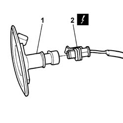
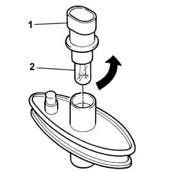
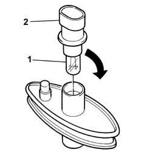

5550C22 Left or right SIDE REPEATER (one) - R.R.
- Path
- Procedures > 55 ELECTRICAL EQUIPMENT > 5550 warning and manoeuvring indicators > 5550C DIRECTION INDICATORS/HAZARD WARNING LIGHTS > 5550C22 Left or right SIDE REPEATER (one) - R.R.
- Kind
- repair procedure (removal / refitting; the operation number is the code)
- Applies to
- all engines; all production periods
- Interactive page
- https://sloeber94.github.io/elrnDB-lThss/en/#/79590
Applies to: all engines; all production periods
 Removing
Removing
 Refitting
Refitting- Disconnect the negative battery terminal.
1. Using a suitable tool, release the side repeater from its housing and remove it.
2. Disconnect the electrical connector.
 | Description | Connector |
|---|---|---|
2 | Left side direction indicator | F020 |
| Description | Connector |
|---|---|---|
2 | Right side direction indicator | F021 |

Applies to: all engines; all production periods
1. Rotate the bulb holder, complete with bulb, in an anti-clockwise direction.
2. Release the side repeater bulb and remove it.

Applies to: all engines; all production periods
Refitting
Removing1. Fit the side repeater bulb in the bulb holder.
2. Fit the bulb holder, complete with bulb, in the housing and rotate it in a clockwise direction.

Applies to: all engines; all production periods
- Connect the electrical connector and fit the side repeater in the housing.
| Description | Connector |
|---|---|---|
. | Left side direction indicator | F020 |
| Description | Connector |
|---|---|---|
. | Right side direction indicator | F021 |
- Connect the negative battery terminal.